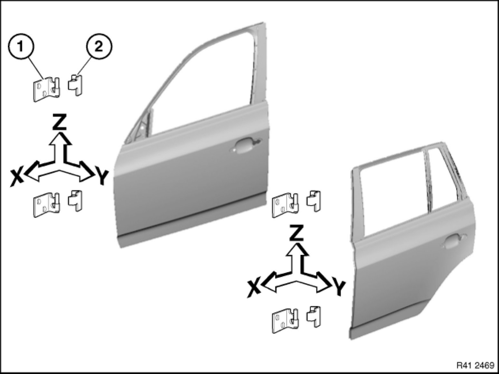
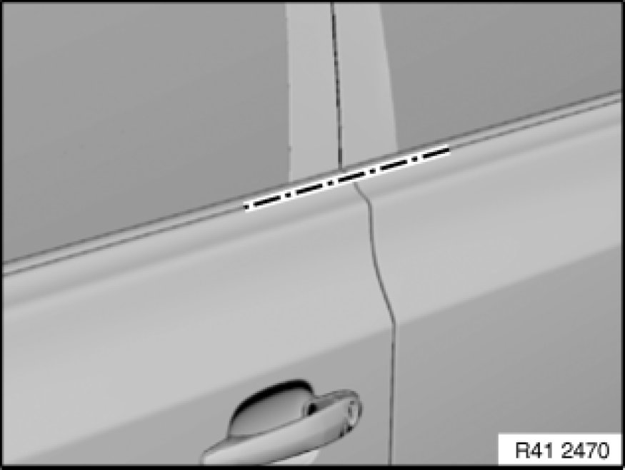
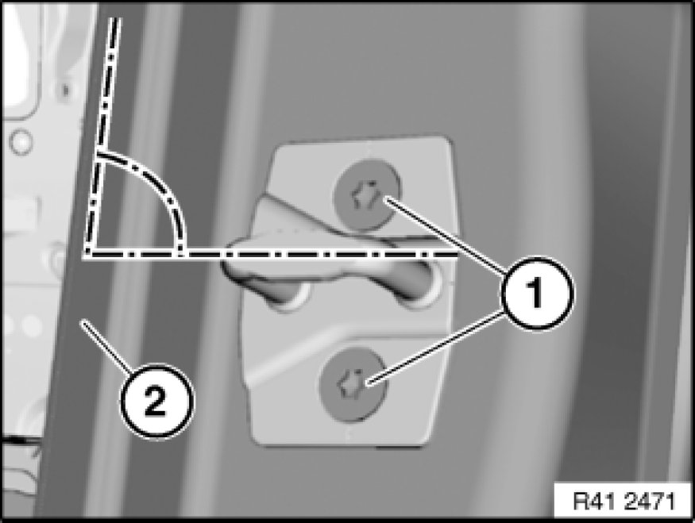

Adjusting Door
41 51 004 - Adjusting front left or right door

Note:
The gap dimensions serve as the basis for adjustment work.
Adjust screwed body parts from rear to front.
Make unpainted surfaces visible by also moving the hinges. Touch these up in the appropriate color.

Caution!
Do not damage adjoining body parts.
Minor corrections (realignment work) are permitted if the existing adjustment options are not sufficient.

Slacken screws (1) and (2) on door hinges to be adjusted at top and bottom.
Adjust door according to specified gap dimension.

Check that adjoining body parts are flush in terms of height and correct if necessary.
After adjustment, tighten hinge screws and nuts.
Tightening torque 41 51 2AZ [1][2]41 51 Front Door (s).
Tightening torque 41 51 3AZ [1][2]41 51 Front Door (s).

Note:
If necessary, adjust lock striker.
Slacken screws (1), adjust lock striker and tighten screws.
Note:
After slackening, lock striker should be positioned approx. 90° to door frame inner edge (2) and be movable.
When the door is closed, the lock striker must not touch or scrape against the door lock. Look out for scratches.